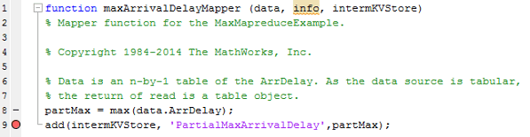
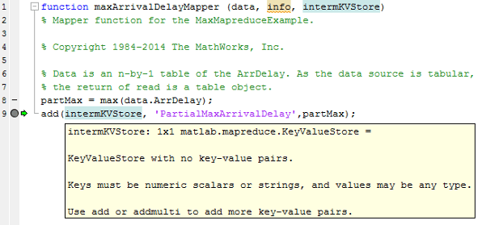
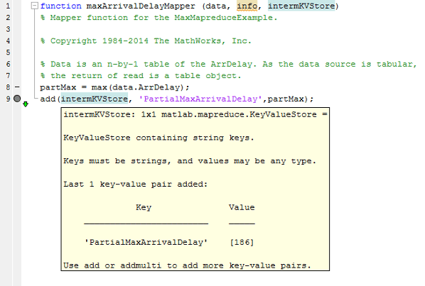
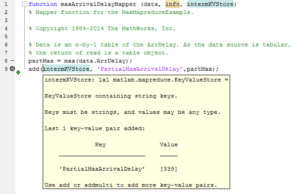
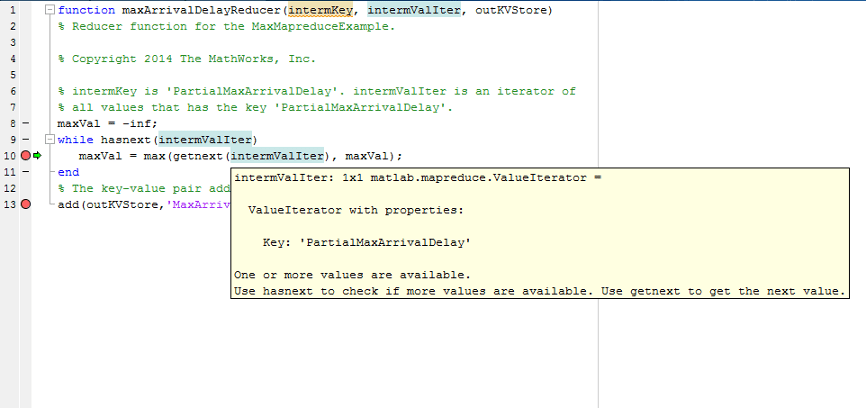
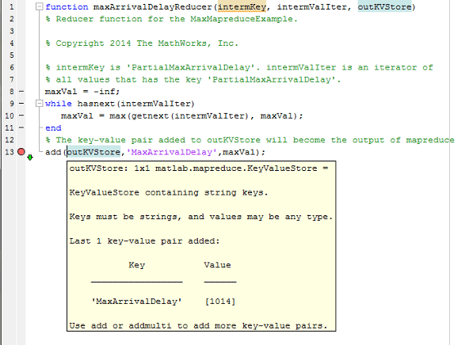

Debug MapReduce Algorithms
This example shows how to debug your mapreduce
algorithms in MATLAB® using a simple example file, MaxMapReduceExample.m.
Debugging enables you to follow the movement of data between the different phases of
mapreduce execution and inspect the state of all intermediate
variables.
To begin, save the contents of the following functions as separate files in your current directory.
Set Breakpoint
Set one or more breakpoints in your map or reduce function files so you can examine the variable values where you think the problem is. For more information, see Set Breakpoints.
Open the file maxArrivalDelayMapper.m.
edit maxArrivalDelayMapper.mSet a breakpoint on line 9. This breakpoint causes execution of
mapreduce to pause right before each call to the map function adds a
key-value pair to the intermediate KeyValueStore object, named
intermKVStore.

Execute mapreduce
Run the mapreduce example file
MaxMapReduceExample.m. Specify mapreducer(0) to
ensure that the algorithm does not run in parallel, since parallel execution of
mapreduce using Parallel Computing Toolbox™ ignores breakpoints.
mapreducer(0); MaxMapReduceExample
MATLAB stops execution of the file when it encounters the breakpoint in the map function. During the pause in execution, you can hover over the different variable names in the map function, or type one of the variable names at the command line to inspect the values.
In this case, the display indicates that, as yet, there are no key-value pairs in
intermKVStore.

Step Through Map Function
Continue past the breakpoint. You can use
dbstepto execute a single line, ordbcontto continue execution until MATLAB encounters another breakpoint. Alternatively, you can click Step or
Continue in the Editor tab. For more
information about all the available options, see Debug MATLAB Code Files.
Step or
Continue in the Editor tab. For more
information about all the available options, see Debug MATLAB Code Files.In this case, use
dbstep(or click
Step) to execute only line 9, which adds a key-value pair to
intermKVStore. Inspect the new display forintermKVStore.
Now, use
dbcont(or click Continue) to continue execution ofmapreduce. During the next call to the map function, MATLAB halts again on line 9. The new display forintermKVStoreindicates that it does not contain any key-value pairs, because the display is meant to show only the most recent key-value pairs that are added in the current call to the map (or reduce) function.Step past line 9 again using
dbstep(or click
Step) to add the next key-value pair to
intermKVStore, and inspect the new display for the variable. MATLAB displays only the key-value pair added during the current call to the map function.
Complete the debugging of the map function by removing the breakpoint and closing the file
maxArrivalDelayMapper.m.
Step Through Reduce Function
You can use the same process to set breakpoints and step through execution of a reduce function. The reduce function for this example is
maxArrivalDelayReducer.m. Open this file for editing.edit maxArrivalDelayReducer.mSet two breakpoints: one on line 10, and one on line 13. This enables you to inspect the
ValueIteratorand the final key-value pairs added to the output,outKVStore.Run the main example file.
MaxMapReduceExample
The execution of the example will pause when the breakpoint on line 10 is encountered. The debug display for the
ValueIteratorindicates the active key and whether any values remain to be retrieved.
Now, remove the breakpoint on line 10 and use
dbcont(or click Continue) to continue execution of the example until the next breakpoint is reached (on line 13). Since this reduce function continually compares each new value from theValueIteratorto the global maximum,mapreduceexecution ends by adding a single key-value pair tooutKVStore.Use
dbstep(or click
Step) to execute line 13 only. The display for
outKVStoreshows the global maximum value thatmapreducewill return as the final answer.
Now use
dbcont(or click Continue) to advance execution, enabling the example to finish running.mapreducereturns the final results.Map 100% Reduce 100% ans = Key Value _________________ ______ 'MaxArrivalDelay' [1014]
For a complete guide to debugging in MATLAB, see Debugging and Analysis.